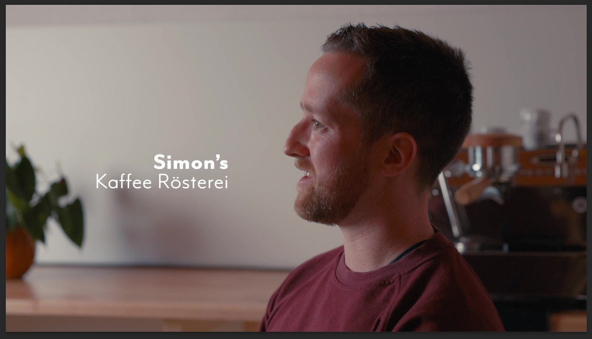

Still mit Simon für das Gesprächs- und Charaktervideo rund um die Momentaufnahme beim Kaffee.
Eine Auswahl aus Film, Fotografie und visuellen Experimenten. Jedes Projekt beginnt mit Neugier.

Still mit Simon für das Gesprächs- und Charaktervideo rund um die Momentaufnahme beim Kaffee.

Ein Video über Stärke, Persönlichkeit und das Thema Eishockey aus einer neuen Perspektive.


Ein Moment aus dem Projekt mit Hassan in Berlin, das Stadtgefühl und persönliche Erzählung verbindet.